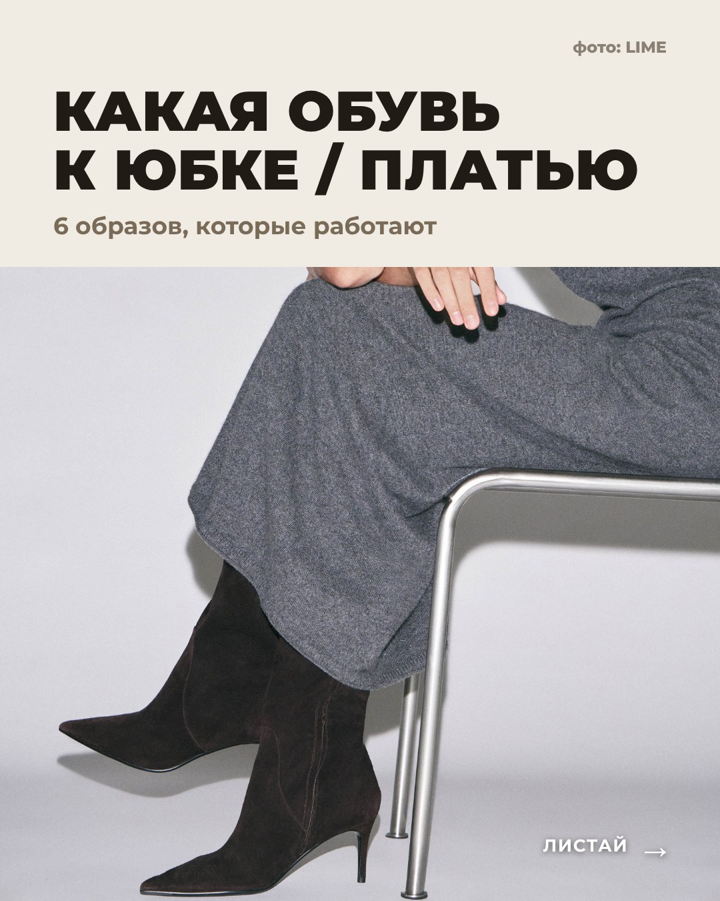
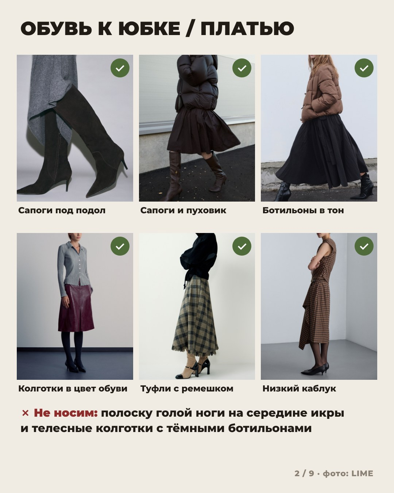
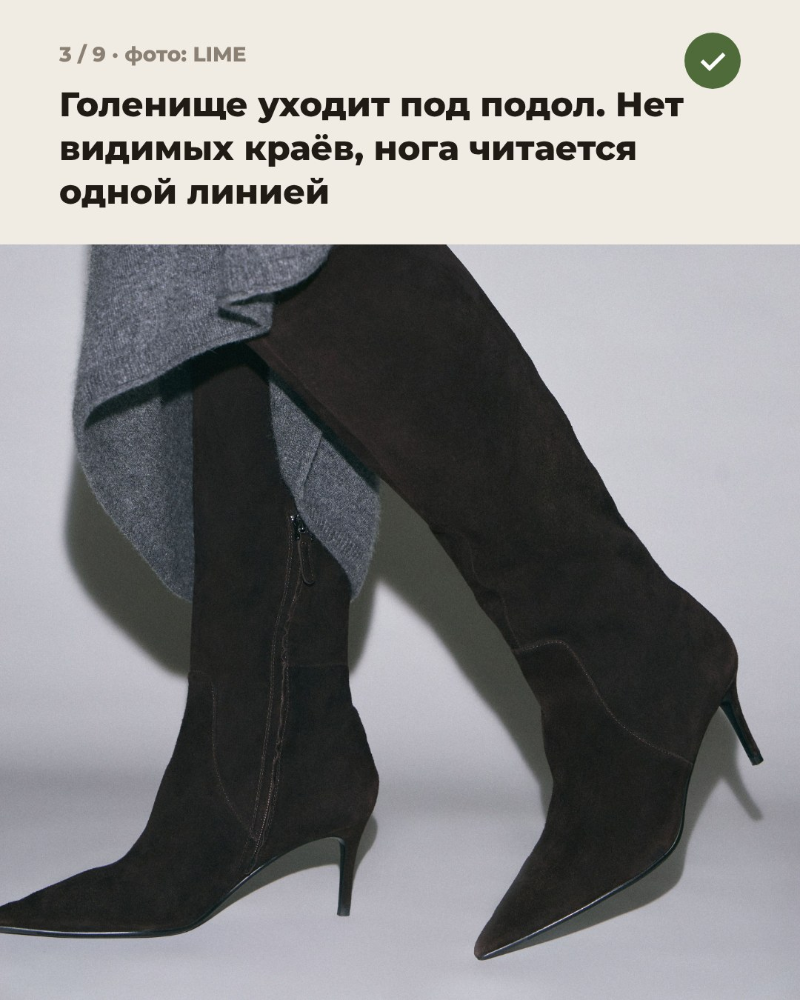
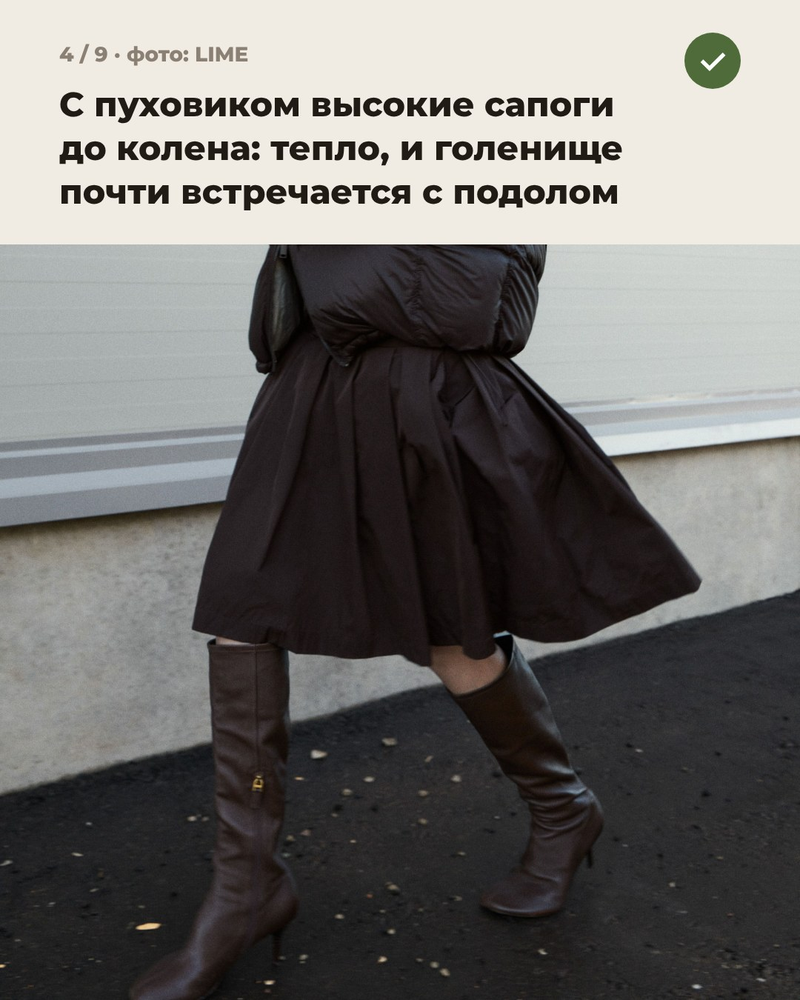
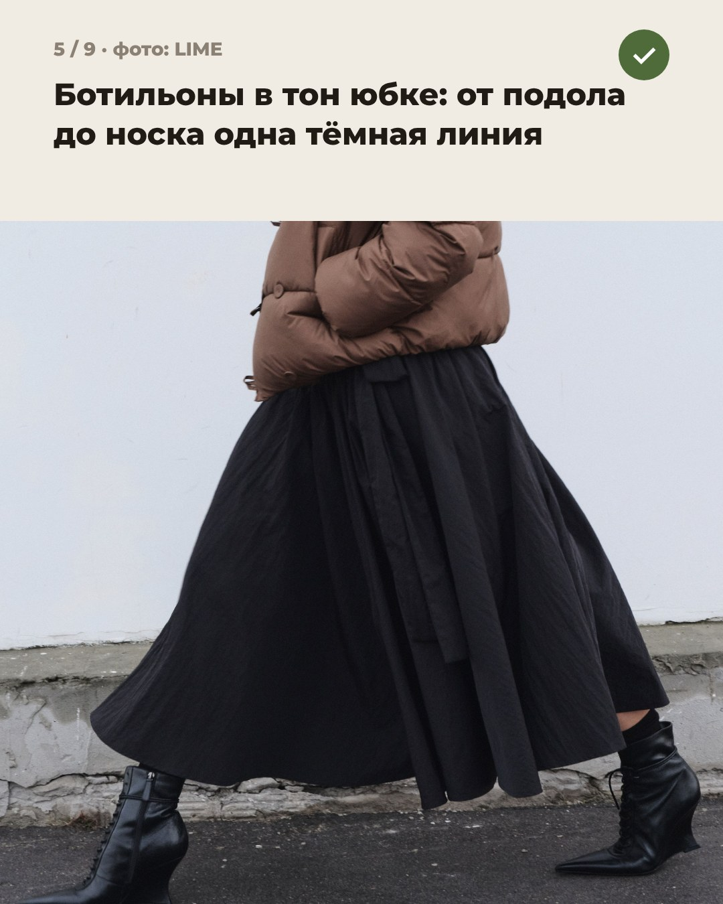
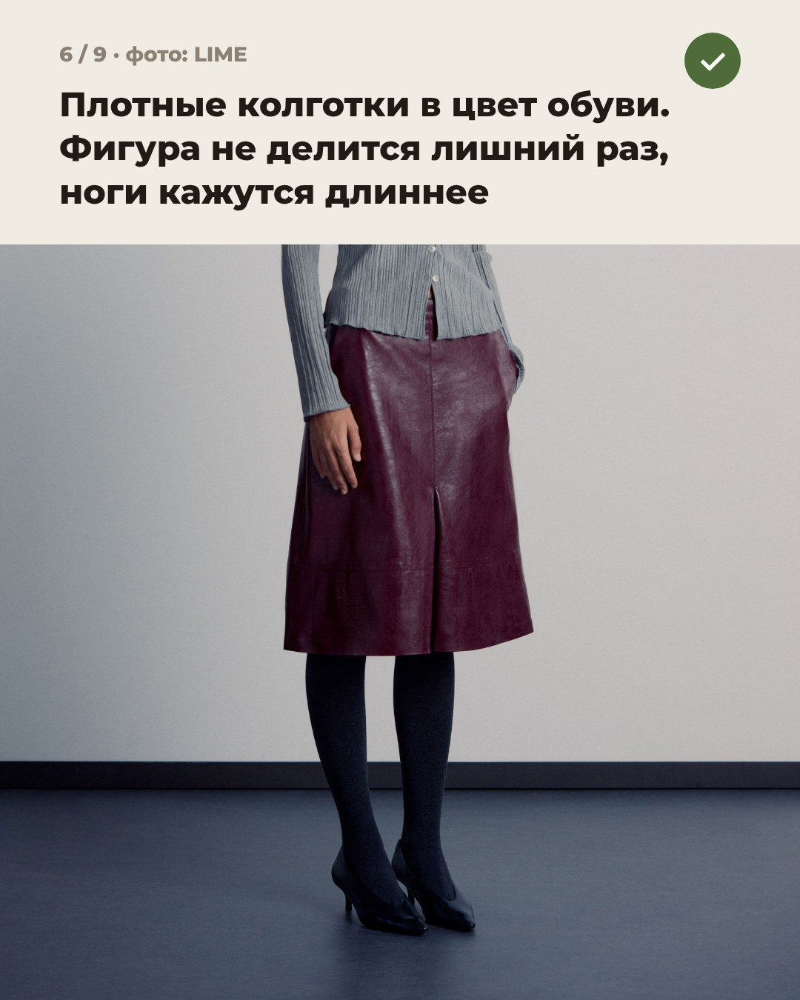
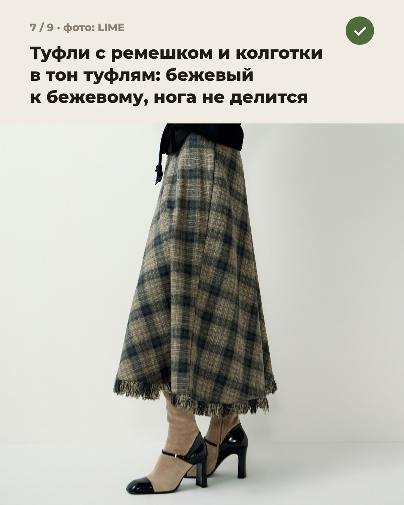
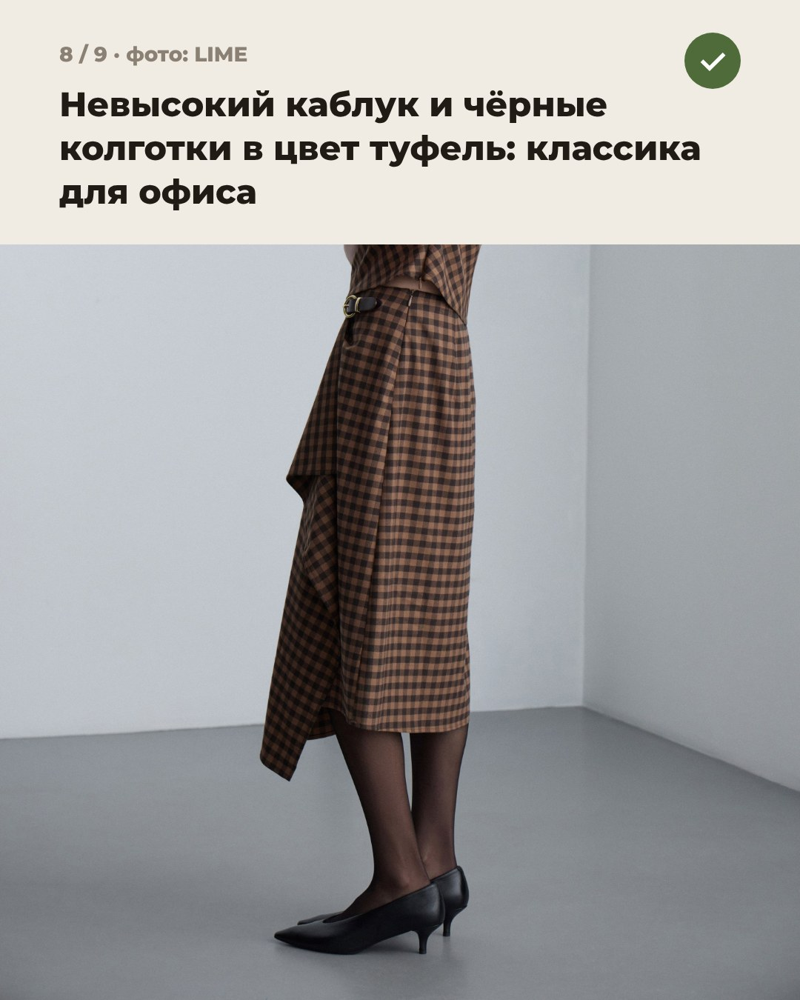
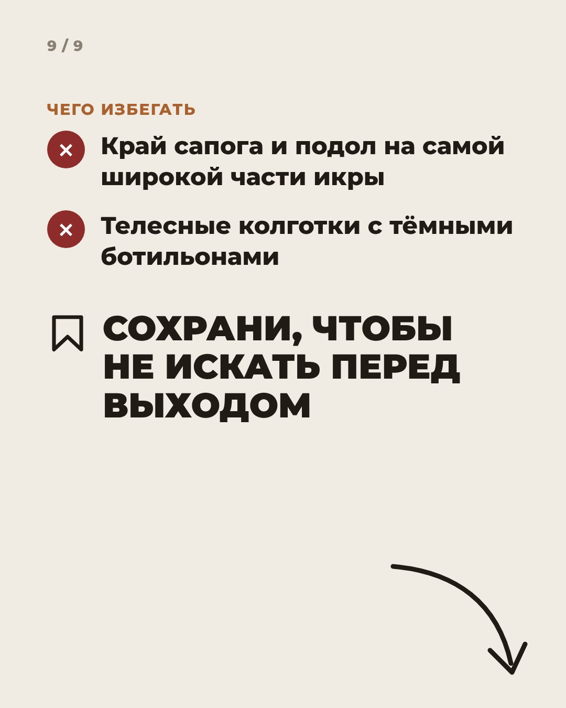

Иirina_sitko23









irina_sitko23 Какая обувь к юбке или платью, чтобы ноги не «обрезало»? Собрала 6 рабочих вариантов, все образы из лукбука LIME.
Главное правило одно: между обувью и подолом не должно быть случайной полоски ноги.
Сохрани, пригодится перед выходом